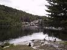
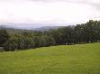
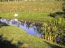
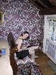

At Rumford

At Rumford
Somewhere, someplace
The Inn at Round Barn Farm's grounds
Jane in the room
Another lovely breakfast, again beautifully presented. We packed our bags, and took them out through the rain to the car. We settled up with our hosts and told them that we'd decided to head to Vermont. We were given the "Select Registry" hotel guide book to help us find somewhere good - a quick glance showed us that it featured lots of lovely hotels.
We start our long drive in the rain. The map we've been using seems to be a little out of date as road numbers have changed. We stopped at a large pharmacy and got a better one. The roads in some places are poorly maintained and we had a couple of "road work"s to negotiate through - in both cases the top surface had been removed leaving heavily pitted gravel and mud.
Our next stop was at the tourist information at Rumford - we were speaking to the lady who runs it and it appear that she's English and so was another local lady so we talk about places in the UK for a while. We get some lunch supplies in the petrol station over the road and also call "The Inn at Round Barn Farm" from the new guide book. They have space for us and will give us a choice of rooms when we arrive.
We continue our LONG drive leaving Maine, passing through New Hampshire and finally arriving in Vermont. We arrive at the Inn and have a guided tour of the inn and the round barn. We have a choice of about 5 rooms, all of them arelovely. Eventually we choose the Sherman room and unpack.
We have a cup of tea and some hors d'ouvres from downstairs and sit by the pond for a while. We then have a game of pool in the games room - and remember why we don't play very often (we're not very good and a game lasts far too long).
I decide to make use of the facilities in the room and enjoy the steam room, then a shower - very relaxing.
The Inn doesn't serve dinner, and there isn't anything walkable so we head off to "John Egan's big world" and have a good dinner. We come back to the hotel and call the innkeeper to see if we can get a beer to finish the evening off - she doesn't know where they are kept.
(5 images.)| 
At Rumford |
At Rumford | 
Somewhere, someplace | 
The Inn at Round Barn Farm's grounds |
| 
Jane in the room |